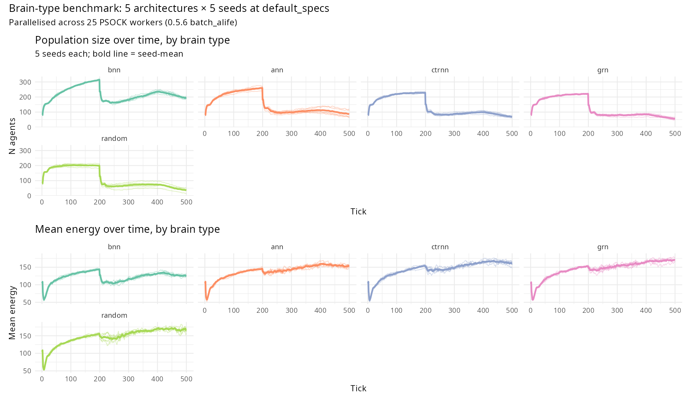

Comparing brain architectures side-by-side
Source:vignettes/s-brain-comparison.Rmd
s-brain-comparison.RmdComparing brain architectures side-by-side
What it models. clade ships five working brain architectures for evolving agents — Bayesian neural network (BNN, default), multilayer perceptron (ANN), continuous-time recurrent network (CTRNN), gene regulatory network (GRN), and a random-action null baseline. Each carries a different inductive bias: BNN learns with uncertainty, ANN is a pure feedforward policy, CTRNN retains temporal state, GRN encodes a regulatory network, random is a behavioural control. The canonical question is how do they compare when placed in the same ecology?
Historically clade had no direct head-to-head benchmark. This
vignette is that benchmark: same grass-foraging ecology, same population
size, same seeds — only brain_type varies.
The setup exercises the 0.5.6 PSOCK-parallel
batch_alife() path at a non-trivial scale: 5 brain types ×
5 seeds = 25 independent clade simulations dispatched
across 25 R+Julia worker sessions, summarised into a tidy table with
summarize_batch(). See
vignette("parameter-space-search") for the surrounding
tooling.
Two unimplemented reserved names.
"transformer" and "synthesis" are listed in
?default_specs as reserved names only — the Julia kernel
errors with “‘transformer’ and ‘synthesis’ are reserved names, not
implemented”. This vignette covers the five working types.
Reproducible example. The code below is the same
dev/benchmarks/brain_comparison.R runner used to produce
the figure, distilled to a readable form:
library(clade)
library(ggplot2); library(patchwork)
BRAIN_TYPES <- c("bnn", "ann", "ctrnn", "grn", "random")
SEEDS <- c(1L, 7L, 13L, 19L, 25L)
base <- default_specs()
base$n_agents_init <- 80L
base$max_agents <- 400L
base$grid_rows <- 30L
base$grid_cols <- 30L
base$grass_rate <- 0.15
base$max_ticks <- 500L
# grid_specs() expands the full 5 × 5 factorial; batch_alife()
# fans out across 25 PSOCK workers (one R + Julia session each);
# summarize_batch() pulls the per-run statistics into a tibble.
specs_list <- grid_specs(base,
brain_type = BRAIN_TYPES,
random_seed = SEEDS)
results <- batch_alife(specs_list, n_cores = length(specs_list))
summary <- summarize_batch(results, specs_list,
param_names = c("brain_type", "random_seed"))
Brain-type benchmark (5 architectures × 5 seeds, 500 ticks each, PSOCK-parallel via batch_alife). Top row: population trajectories per brain type; thin lines are individual seeds, bold line is seed-mean. Bottom row: mean-energy trajectories. BNN runs up a large population at low per-agent energy; GRN / CTRNN maintain small populations at high per-agent energy. random baseline is the most fragile.
What we found (2026-04-17 benchmark). Summary statistics over the last-tick state, averaged across 5 seeds:
| brain_type | n_final | mean_energy | diversity | viability (5 seeds) |
|---|---|---|---|---|
| bnn | 196 ± 5 | 125 ± 2 | 0.45 ± 0.01 | 5/5 viable |
| ann | 87 ± 26 | 154 ± 3 | 0.40 ± 0.01 | 5/5 viable |
| ctrnn | 70 ± 5 | 160 ± 8 | 0.47 ± 0.02 | 5/5 viable |
| grn | 56 ± 8 | 170 ± 5 | 0.44 ± 0.01 | 5/5 viable |
| random | 36 ± 14 | 165 ± 6 | 0.43 ± 0.04 | 2/5 viable, 1/5 crashed |
Three things are worth noting.
- BNN trades per-capita quality for density. BNN maintains a ~3× larger population than any other type but at the lowest per-agent energy (125 vs 154–170). The Thompson-sampled weights let BNN agents explore more aggressively; they forage less efficiently per individual but populations grow faster and crash less. Zero crashes across 5 seeds.
- GRN / CTRNN trade density for quality. The recurrent and gene-regulatory architectures produce the smallest populations (56, 70) at the highest per-agent energy (170, 160). Agents behave more deterministically, extracting more per tick but sustaining fewer individuals. Also zero crashes.
- ANN sits between, as expected — it’s a pure feedforward policy without BNN’s exploration or CTRNN’s memory.
- random is the least robust. One of five seeds crashes to extinction; the others sit at ~36 agents with moderately good mean energy. Without evolved behaviour, survival is seed-sensitive.
None of these results say one architecture is better — they
partition the r-vs-K axis of life-history strategy in a way that maps
cleanly onto the canonical cognitive-style trade-off. The benchmark
itself is reproducible by running
dev/benchmarks/brain_comparison.R from a fresh clade
install.
Discovery experiments
The above benchmark is a single ecology. Fuller characterisation would look at:
-
Under scarcity. Halve
grass_rateto 0.075. Does BNN still dominate the density axis, or do the high-quality per-agent strategies (GRN, CTRNN) catch up when marginal foragers starve? Not yet tried — good first follow-up. -
Under predation. Add
n_predators_init = 10. Does CTRNN’s temporal memory pay off for escape sequences? Not yet tried. -
Under seasonality.
seasonal_amplitude = 0.7, season_length = 50. Plastic architectures (BNN via sigma, ANN none) should diverge. Not yet tried. -
In mixed populations. Would require a kernel change
— currently
brain_typeis a single spec per simulation. Worth opening as an issue; it would make the classic Boyd-Richerson-style architecture tournament possible.